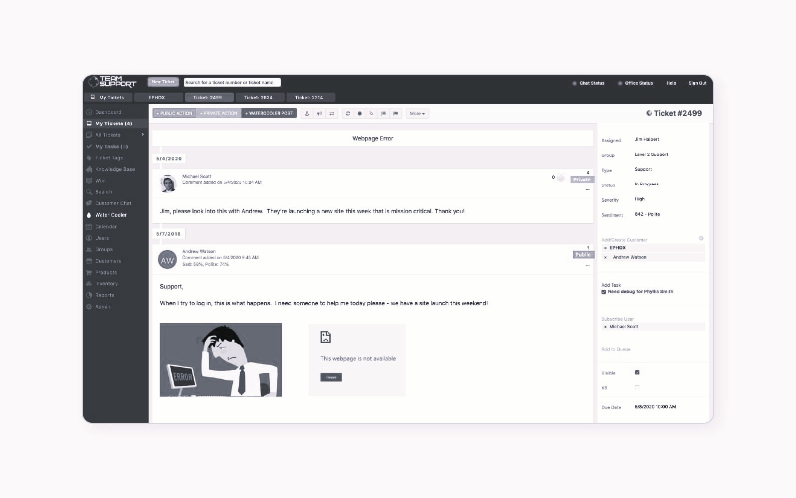

support helpdesk n1 & assistance utilisateurs
contexte : prise en charge des requêtes quotidiennes, incidents matériels et demandes d'accès collaborateurs chez BRUT.
réalisation : traitement des tickets de niveau 1 (FreshDesk / GLPI), dépannage physique/réseau, création de canaux Slack et assistance de proximité sur l'environnement Mac.